No.01 · Flower field
꽃밭
장미 아치와 해바라기가 핀 꽃밭. 소풍 담요 위 바구니와 찻주전자, 정원 테이블의 케이크 스탠드, 나무 새집까지.
↓ 이 방 받기 .fbroom · 73KB친구들이 골라 준 컨셉으로 만든 미니룸이에요. 마음에 드는 방만 골라 받거나, 올라와 있는 방을 한 번에 모두 받아 가세요.
장미 아치와 해바라기가 핀 꽃밭. 소풍 담요 위 바구니와 찻주전자, 정원 테이블의 케이크 스탠드, 나무 새집까지.
↓ 이 방 받기 .fbroom · 73KB
비 갠 뒤 눅눅한 여름 저녁. 가로등 아래 날벌레, 공원 자판기와 운동기구, 수국과 평상 위 수박.
↓ 이 방 받기 .fbroom · 85KB
창호 문으로 볕이 드는 한옥 방. 매화 병풍 앞 보료와 소반, 자개장과 가야금, 펼쳐 둔 색동 이부자리.
↓ 이 방 받기 .fbroom · 67KB
달문 너머로 대나무가 보이는 방. 붉은 등롱 아래 원탁과 차, 바둑판과 문방구 책상, 청화백자와 새장.
↓ 이 방 받기 .fbroom · 76KB
쇼지 너머로 벚꽃이 보이는 다다미 방. 귤 바구니 올린 코타츠와 고양이, 기모노 걸이와 도코노마, 풍경 소리.
↓ 이 방 받기 .fbroom · 79KB
호박등이 켜진 마녀의 방. 초록빛 마녀 솥, 수정구슬과 주문서, 해골 티파티와 천장에 매달린 유령들.
↓ 이 방 받기 .fbroom · 85KB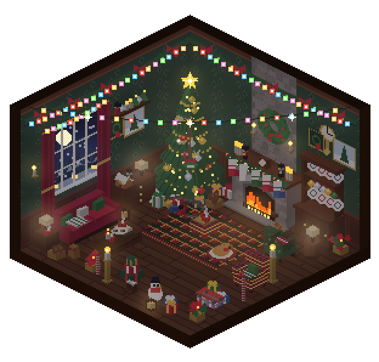
눈 내리는 밤, 큰 돌 벽난로에 양말이 걸린 거실. 장난감 기차가 도는 트리, 알록달록 전구와 선물 더미, 강아지 방석까지.
↓ 이 방 받기 .fbroom · 151KB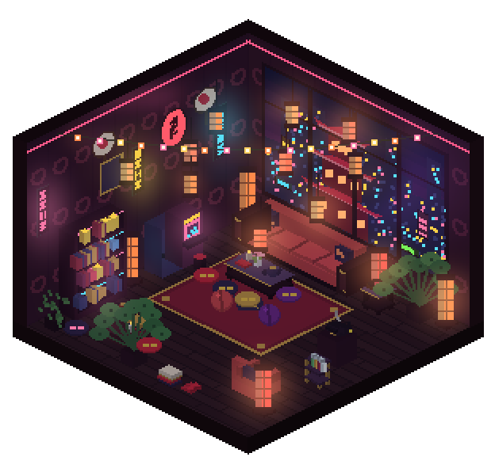
네온 도시가 내려다보이는 큰 창 앞 붉은 소파. 원통 등불과 오락기 두 대, 바 카트와 레코드, 좌탁과 방석.
↓ 이 방 받기 .fbroom · 143KB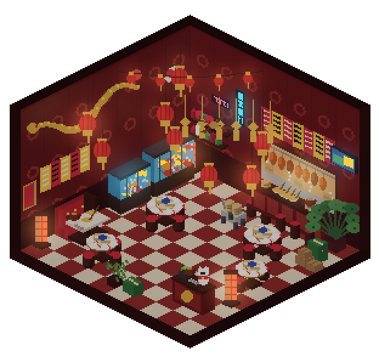
붉은 등롱이 가득한 식당. 돌림판 원탁과 칸막이 좌석, 딤섬 수레, 구이 오리가 걸린 주방, 금룡 벽화와 복고양이.
↓ 이 방 받기 .fbroom · 119KB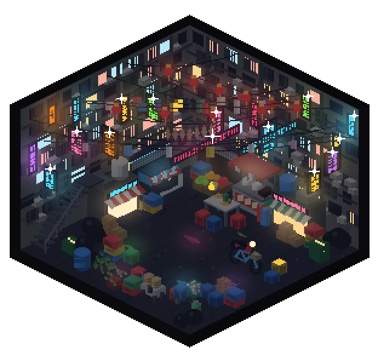
네온 간판이 반짝이는 좁고 어두운 골목. 국수 노점과 가게 앞칸, 철계단과 스쿠터, 머리 위로 엉킨 전선과 빨래.
↓ 이 방 받기 .fbroom · 161KB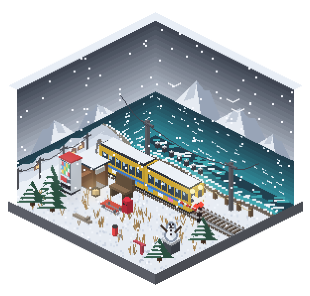
설산과 청록 바다 사이로 노란 기차가 지나가는 해안. 건널목과 간이역 자판기, 방파제와 눈사람.
↓ 이 방 받기 .fbroom · 64KB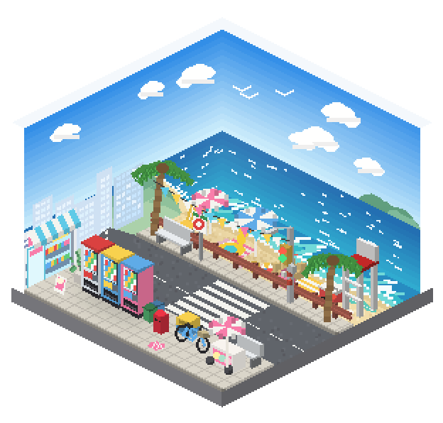
파라솔이 핀 해변 옆 깃발 산책로. 횡단보도 건너 편의점과 자판기, 구조대 의자와 아이스크림 수레.
↓ 이 방 받기 .fbroom · 70KB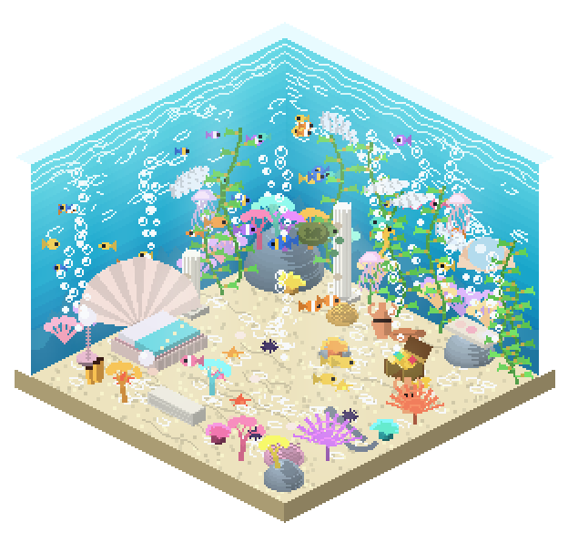
빛줄기가 내려오는 맑은 바닷속. 가리비 침대와 진주 등, 산호 정원과 다시마 숲, 보물 상자, 열대어와 해파리.
↓ 이 방 받기 .fbroom · 142KB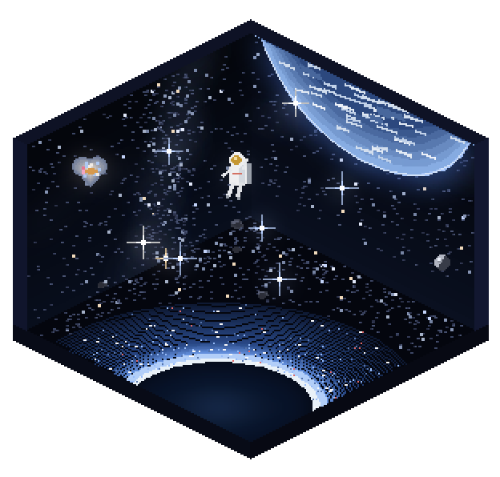
은은한 은하수 아래 떠 있는 방. 발밑을 휘감는 빛나는 행성 고리, 천장 위로 걸린 지구, 하트 은하와 우주인.
↓ 이 방 받기 .fbroom · 97KB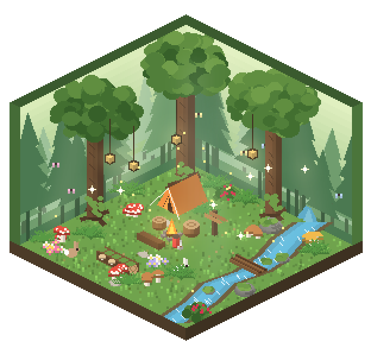
햇살이 드는 숲속 빈터. 큰 나무에 걸린 등불, 텐트와 모닥불, 개울 위 통나무 다리, 버섯과 토끼, 반딧불.
↓ 이 방 받기 .fbroom · 100KB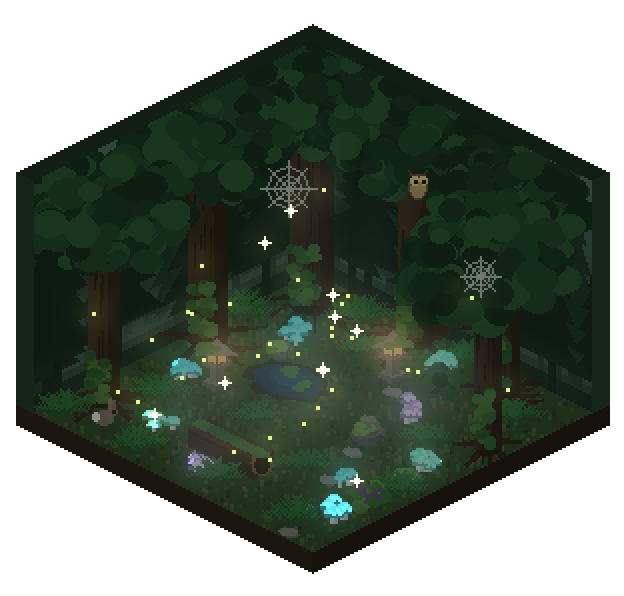
안개가 깔린 어두운 깊은 숲. 빽빽한 고목 사이로 빛나는 버섯과 이끼 낀 석등, 연못, 올빼미와 반딧불.
↓ 이 방 받기 .fbroom · 119KB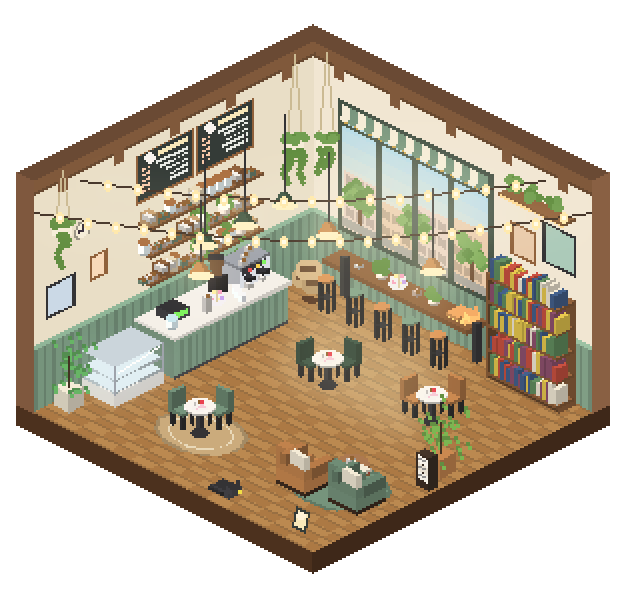
햇살 드는 창가 바가 있는 카페. 에스프레소 카운터와 케이크 진열장, 칠판 메뉴, 책장, 1인 소파와 전구 줄.
↓ 이 방 받기 .fbroom · 106KB.fbroom 파일을 미니룸 창 위로 끌어다 놓으면 방이 추가돼요.Focus Buddy 2.10 이상에서 쓸 수 있고, 2.25부터는 받은 방이 미니룸 꾸미기 창의 ‘캐릭터 방’ 칸에 알아서 모여요. 아직 Focus Buddy가 없다면 소개 페이지에서 받을 수 있어요.